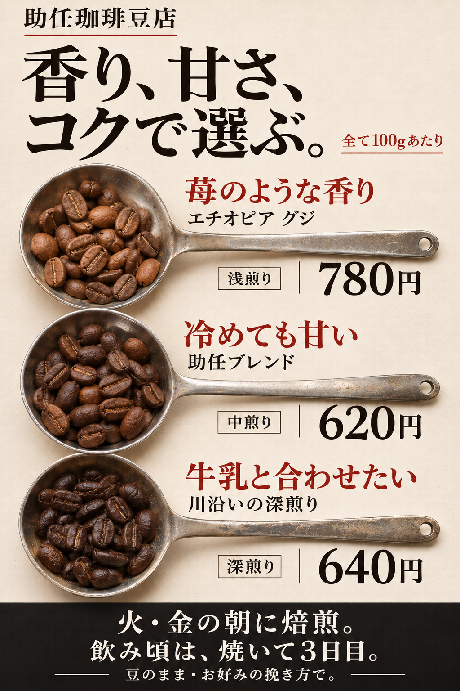
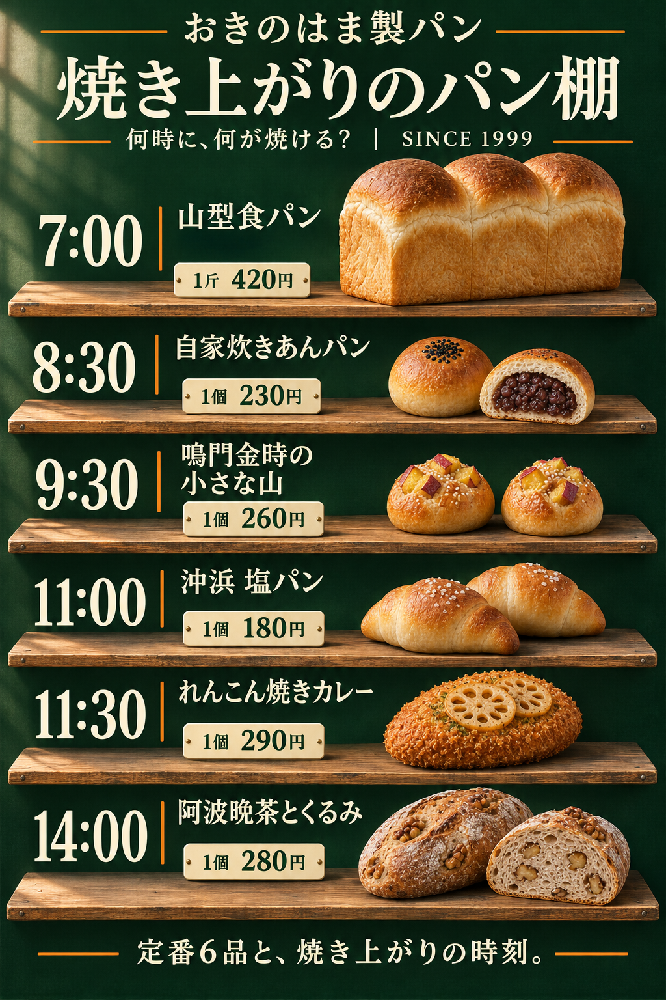

助任珈琲豆店
豆さじを3本並べ、浅煎り・中煎り・深煎りを見比べる案です。味の目安から、銘柄と100gの値段までたどれます。


店頭看板の見た目案 v3｜2026.11.03
豆の焼き色を見比べて選ぶ看板と、パンが焼き上がる一日をたどる看板です。商品の見せ方を、選びやすさにつなげました。
豆さじを3本並べ、浅煎り・中煎り・深煎りを見比べる案です。味の目安から、銘柄と100gの値段までたどれます。

看板を6段のパン棚に見立てました。朝7時から14時まで、焼き上がるパンの姿・名前・値段を並べています。
